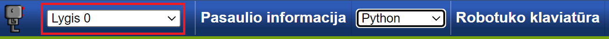
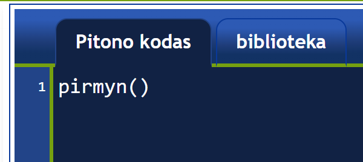
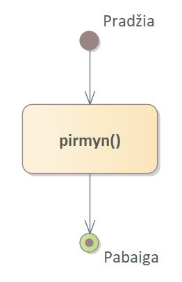

Tyrinėkite Robotuko aplinką ir pagrindines Robotuko komandas.
Nors naudojant aplinkas, tokias kaip Scratch, galima daug ko išmokti, kažkada reikės pereiti prie tradicinės programavimo kalbos. Šiame kurse naudosime Pitono programavimo kalbą. Vis tik, prieš pradedant rimtai dirbti su Pitonu aplinka, pasismaginsime Robotuko aplinkoje. Naudodami Robotuką, išmoksime rašyti Pitono komandas. Rašydami kodą jūs be abejonės darysite sintaksės ir logikos klaidas (kompiuteris nesupras arba veiks ne taip kaip reikia), bet būtent tai ir leis jums įsisavinti tekstinį programvimą. Taigi, nenusiminkite jei tų klaidų bus daug ir kartais nesiseks jų taisyti.
Atidarykite Robotuko aplinką. Jei iškart neatidarys 0 žingsnio pasaulio, pasirinkite jį pasaulių meniu:
Dabar turėtumėte matyti Robotuką - vienišą tuščiame pasaulyje. Deja, Robotukas yra paprastas robotas, todėl jis gali atlikti tik keletą pagrindinių komandų. Vienas dalykas, kurį Robotukas gali padaryti, tai judėti į priekį, kaip nurodyta:
Redaktoriaus skydelyje yra viena instrukcija:
pirmyn()pirmyn() yra Pitono funkcijos pavyzdys. Funkcija turi pavadinimą; šiuo atveju, tai yra
pirmyn. Galiojantys pavadinimai prasideda raide arba pabraukimo ženklu “_” ir gali būti sudaryti iš
raidžių, skaičių arba pabraukimo ženklo “_”. Funkcijos pavadinimą seka (). Tai pasako Robotukui, kad
funkcija turi būti įvykdyta arba iškviesta (du sinonimai). Ši funkcija turi būti naujoje eilutėje.
[Vėliau panagrinėsime šios taisyklės išimtis.]
Kartais mes kursime algoritmų schemas, kurios grafiškai vaizduoja programą. Algoritmą, kuriame yra
viena instrukcija pirmyn(), galime vaizduoti taip:
Visa programa, turinti šią vieną instrukciją, būtų atvaizduojama taip:
Algoritmo schemoje instrukcijų seką nurodo rodyklės, kurios prasideda nuo “Pradžia” mazgo ir baigiasi mazge “Pabaiga”.
Pabandykite!
Pridėkite antrą
pirmyn()instrukciją, kad Robotukas žengtų du žingsnius vietoj vieno.
Patarimas
Kiekviena instrukcija turi būti naujoje eilutėje, be papildomų tarpų eilutės pradžioje.
Kuriant kompiuterines programas, tikėtina, kad padarysite daug klaidų. Norėdami pamatyti, kaip Robotukas reaguoja į kai kurias klaidas, paprašysiu jus tyčia padaryti klaidą programoje.
Pabandykite!
Pakeiskite
pirmyn()įPirmyn()(su didžiąja P) ir bandykite vykdyti programą.
Pitono kalba, kurią supranta Robotukas, yra tokia, kuriai svarbus raidžių dydis; tai reiškia, kad mažosios ir didžiosios raidės turi skirtingas reikšmes. Dabar, kai matote, kaip Robotukas susidoroja su klaidomis, pataisykite programą ir paleiskite taisyklingą programą.
Pačiame Robotuko pasaulio viršuje rasite mygtuką pavadinimu Robotuko klaviatūra. Jei spustelėsite jį, pasirodys speciali klaviatūra. Spustelėjus kiekvieną mygtuką, atitinkama instrukcija, Pitono raktažodis ir pan., bus automatiškai įterpta į redaktorių. Tai gali būti naudinga užtikrinant, kad pavadinimai būtų teisingai užrašyti ir kad būtini skliausteliai nebūtų pamiršti.
Kituose puslapiuose jums bus pateikti iššūkiai, kuriuos turėsite įveikti. Nors juos galite atlikti bet kokia tvarka, tačiau pateikta tvarka logiškai atskleidžia Robotuko galimybes. Kai baigsite žingsnį, būtų gerai parodyti savo sprendimą mokytojui, užsitikrinant, jog sukūrėte tinkamą sprendimą. Nors pasauliai sukurti taip, kad parodytų jums ar jūsų sprendimas teisingas, vis tik labai naudinga, kai patyręs žmogus duoda patarimų!
Robotukas yra šiuolaikinė aplinkos, vadinamos Reeborg World adaptacija. Ją sukūrė André Roberge. Savo ruožtu, Reeborg World yra programos, vadinamos Karel the Robot, kurią sukūrė Richard Pattis Stanfordo universitete 1981 m., adaptacija. Versiją, kurią naudosime, adaptavo Tomas Blažauskas. Jūs naudosite pamokas, kurios yra André Roberge, Roger Frank, Jeffrey Elkner, André Roberge ir Dan Schellenberg sukurtų pamokų adaptacija lietuvių kalbai.
Turinys Lygis 1: Parvesk Robotuką namo ir išsaugok savo darbą